11 Järeldav statistika
library(tidyverse)
library(bayesboot)
library(boot)
library(rethinking) #HPDI() and PI(). Requires Stan.
#source("R/")11.0.1 3.1. Simulatsiooni jõud
Järeldav statistika püüab valimi põhjal teha järeldusi statistilise populatsiooni kohta, millest see valim pärineb. Sellisel tegevusel on mõtet ainult siis, kui ühest küljest valim peegeldab populatsiooni ja teisest küljest valim ei ole sama asi, mis populatsioon. Seega on statistika abil tehtud järeldused alati rohkem või vähem ebamäärased ning meil on vaja meetodit selle ebamäärasuse mõõtmiseks. Aga kõigepealt illustreerime valimi ja populatsiooni erinevust.
11.0.2 3.1.1. Valim ei ole sama, mis populatsioon
Simuleerimine on lahe sest erinevalt päris maailmast elavad simulatsioonid mudeli väikses maailmas ning seega teame me täpselt, mida me teeme ja mida on meil selle tagajärjel oodata. Simulatsioonidega saame me hõlpsalt kontrollida, kas ja kuidas meie mudelid töötavad ning genereerida olukordi (parameetrite väärtuste kombinatsioone), mida päris maailmas kunagi ette ei tule. Selles mõttes on mudelid korraga nii väiksemad kui suuremad kui päris maailm.
Alustuseks simuleerime juhuvalimi n=3 lõpmata suurest normaaljaotusega populatsioonist, mille keskmine on 100 ja sd on 20. Päris elus on korraliku juhuvalimi tõmbamine tehniliselt tõsine ettevõtmine ja, mis veelgi olulisem, me ei tea kunagi, milline on populatsiooni tõeline jaotus, keskmine ja sd. Elagu simulatsioon!
set.seed(1) #makes random number generation reproducible
(Sample <- rnorm(n = 3, mean = 100, sd = 20)) #extra parentheses work as print()## [1] 87.47092 103.67287 83.28743mean(Sample)## [1] 91.47707sd(Sample)## [1] 10.76701Nagu näha on meie valimi keskmine 10% väiksem kui peaks ja valimi sd lausa kaks korda väiksem kui peaks. Seega peegeldab meie valim halvasti populatsiooni — aga me teame seda ainult tänu sellele, et tegu on simulatsiooniga.
Kui juba simuleerida, siis robinal: tõmbame ühe valimi asemel 10 000, arvutame seejärel 10 000 keskmist ja sd-d ning vaatame omakorda nende statistikute jaotusi ja keskväärtusi. Simulatsioon on nagu tselluliit — see on nii odav, et igaüks võib seda endale lubada.
Meie lootus on, et kui meil on palju valimeid, millel kõigil on juhuslik viga, mis neid populatsiooni suhtes ühele või teisele poole kallutab, siis rohkem on valimeid, mis asuvad tõelisele populatsioonile pigem lähemal kui kaugemal.
N <- 3
N_simulations <- 10000
df <- tibble(a = rnorm(N * N_simulations, 100, 20), b = rep(1:N_simulations, each = N) )
Summary <- df %>% group_by(b) %>% summarise(Mean=mean(a), SD= sd(a) )
Summary %>% ggplot(aes(Mean) ) + geom_histogram()## `stat_bin()` using `bins = 30`. Pick better value with `binwidth`.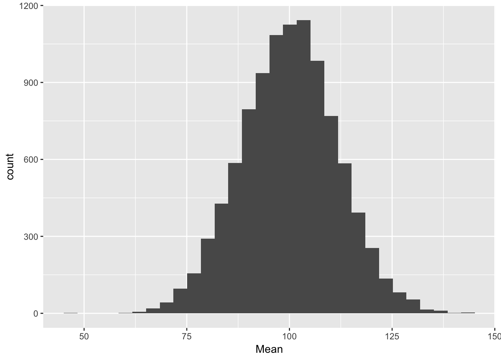
mean(Summary$Mean) ## [1] 99.98043mean(Summary$SD)## [1] 17.76452Oh-hooo. Paljude valimite keskmiste keskmine ennustab väga täpselt populatsiooni keskmist aga sd-de keskmise keskmine alahindab populatsiooni sd-d. Valem, millega sd-d arvutatakse tõõtab lihtsalt kallutatult, kui n on väike (<10)
Ja nüüd 10 000 SD keskväärtused:
Summary %>% ggplot(aes(SD)) + geom_histogram()## `stat_bin()` using `bins = 30`. Pick better value with `binwidth`.
mode <- function(x, adjust=1) {
x <- na.omit(x)
dx <- density(x, adjust=adjust)
y_max <- dx$x[which.max(dx$y)]
y_max
}
mode(Summary$SD)## [1] 14.07554SD-de jaotus on ebasümmeetriline ja mood ehk kõige tõenäolisem valimi sd väärtus, mida võiksime oodata, on u 14, samal ajal kui populatsiooni sd = 20. Lisaks on sd-de jaotusel paks saba, mis tagab, et tesest küljest pole ka vähetõenäoline, et meie valimi sd populatsiooni sd-d kõvasti üle hindab.
Arvutame, mitu % valimite sd-e keskmistest on > 25
sum(Summary$SD>25)/10000## [1] 0.2114Me saame >20% tõenäosusega pahasti ülehinnatud SD.
sum(Summary$SD<15)/10000## [1] 0.4344Ja me saame >40% tõenäosusega pahasti alahinnatud sd. Selline on väikeste valimite traagika. (Jooksuta sama simulatsiooni n = 100 korral.)
Aga vähemalt populatsiooni keskmise saame me palju valimeid tõmmates ilusasti kätte — ka väga väikeste valimitega.
Kahjuks pole meil ei vahendeid ega kannatust 10 000 valimi loodusest kogumiseks. Enamasti on meil üksainus valim. Õnneks pole sellest väga hullu sest meil on olemas analoogne meetod, mis töötab üsna hästi ka ühe valimiga. Seda kutsutakse bootstrappimiseks ja selle võttis esimesena kasutusele parun von Münchausen. Too jutukas parun nimelt suutis end soomülkast iseenda patsi pidi välja tõmmata, mis ongi bootstrappimise põhimõte.
11.0.3 3.1.2. Bootstrappimine
Populatsioon on valimile, mis valim on bootstrappitud valimile.
Nüüd alustame ühestainsast empiirilisest valimist ja genereerime sellest 10 000 virtuaalset valimit. Selleks tõmbame me oma valimist virtuaalselt 10 000 uut juhuvalimit (bootstrap valimit), igaüks neist sama suur kui algne valim. Trikk seisneb selles, et bootstrap valimite tõmbamine käib asendusega, st iga empiirilise valimi element, mis bootstrap valimisse tõmmatakse, pannakse kohe ka algsesse valimisse tagasi. Seega saab seda elementi kohe uuesti samasse bootstrap valimisse tõmmata (kui juhus nii tahab). Seega sisaldab tüüpiline bootstrap valim osasid algse valimi numbreid mitmes korduses ja teisi üldse mitte. Bootstrap valimid plotitakse sama moodi nagu me ennist tegime oma valimitega lõpmatust populatsioonist. Ainsad erinevused on, et bootstrapis on piiratud algse andmekogu suurus, millest valimeid tõmmatakse ning, et iga bootstrapi valim on sama suur kui algne andmekogu.
Bootstrap empiirilisele valimile suurusega n töötab nii:
- tõmba empiirilisest valimist k uut virtuaalset valimit, igaüks suurusega n
- arvuta keskmine, sd või mistahes muu statistik igale bootstrapi valimile. Tee seda k korda.
- joonista oma statistiku väärtustest histogramm või density plot
- nende andmete põhjal saab küsida palju toreidaid küsimusi — vt allpool.
Mis on USA presidentide keskmine pikkus? Meil on valim 10 presidendi pikkusega.
heights <- c(183, 192, 182, 183, 177, 185, 188, 188, 182, 185) %>% as_tibble(heights) ## Warning in as.data.frame.numeric(value, stringsAsFactors = FALSE, ...):
## 'row.names' is not a character vector of length 10 -- omitting it. Will be
## an error!n <- 10 #sample size
nr_boot_samples <- 4000 #the nr of bootstrap samples
a <- sample_n(heights, n * nr_boot_samples, replace=TRUE) #create random sample with replacement
a$key <- rep(1:nr_boot_samples, each = n) #create a column "key" that cuts the sample into slices of size n
a1 <- a %>% group_by(key) %>% summarise(Value= mean(value)) #calculate the mean for each slice of n values
dens(a1$Value)
Alternatiivne ja aeglasem kood, mis kasutab mosaic::do().
library(mosaic)## Loading required package: lattice##
## Attaching package: 'lattice'## The following object is masked from 'package:boot':
##
## melanoma## Loading required package: ggformula##
## New to ggformula? Try the tutorials:
## learnr::run_tutorial("introduction", package = "ggformula")
## learnr::run_tutorial("refining", package = "ggformula")##
## Attaching package: 'ggformula'## The following object is masked from 'package:modelr':
##
## na.warn## Loading required package: mosaicData## Loading required package: Matrix##
## Attaching package: 'Matrix'## The following object is masked from 'package:tidyr':
##
## expand##
## The 'mosaic' package masks several functions from core packages in order to add
## additional features. The original behavior of these functions should not be affected by this.
##
## Note: If you use the Matrix package, be sure to load it BEFORE loading mosaic.##
## Attaching package: 'mosaic'## The following object is masked from 'package:Matrix':
##
## mean## The following object is masked from 'package:boot':
##
## logit## The following object is masked from 'package:brms':
##
## mm## The following object is masked from 'package:modelr':
##
## resample## The following objects are masked from 'package:psych':
##
## logit, read.file, rescale## The following object is masked from 'package:ggthemes':
##
## theme_map## The following objects are masked from 'package:rethinking':
##
## logit, resample## The following objects are masked from 'package:car':
##
## deltaMethod, logit## The following objects are masked from 'package:dplyr':
##
## count, do, tally## The following object is masked from 'package:purrr':
##
## cross## The following objects are masked from 'package:stats':
##
## binom.test, cor, cor.test, cov, fivenum, IQR, median,
## prop.test, quantile, sd, t.test, var## The following objects are masked from 'package:base':
##
## max, mean, min, prod, range, sample, sumheights <- c(183, 192, 182, 183, 177, 185, 188, 188, 182, 185) %>% as_tibble(heights) ## Warning in as.data.frame.numeric(value, stringsAsFactors = FALSE, ...):
## 'row.names' is not a character vector of length 10 -- omitting it. Will be
## an error!sample_means <- mosaic::do(4000) *
(heights %>% sample_n(size = 10, replace = TRUE)) ## Using parallel package.
## * Set seed with set.rseed().
## * Disable this message with options(`mosaic:parallelMessage` = FALSE)#võta heigths andmeraamist 10-ne valim (tagasi panekuga) ja tee seda 4000 korda järjest. tulemuseks on tidy tibble, kus on veerg .index, mille järgi saab grupeerida.
sample_means1 <- sample_means %>% group_by(.index) %>% summarise(Mean=mean(value))
ggplot(data = sample_means1, aes(x = Mean)) +
geom_histogram(color = "white", bins = 20)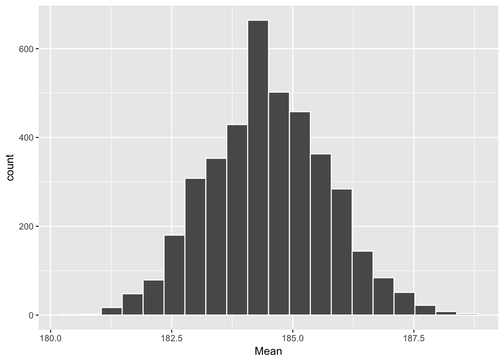
Nii saab do() abil 2 veeruga tibble, mille igas veerus on 3 juhuslikku arvu. NB! kuna ka tidyverse/dplyr sisaldab do() nimelist funktsiooni, on kasulik seda siin eksplitsiitselt mosaic::do() kaudu esile manada.
mosaic::do(3)* rnorm(2)## Using parallel package.
## * Set seed with set.rseed().
## * Disable this message with options(`mosaic:parallelMessage` = FALSE)## V1 V2
## 1 2.1831575 0.10281544
## 2 0.8128593 -0.06289664
## 3 -0.3278966 1.40192887Mida selline keskväärtuste jaotus tähendab? Me võime seda vaadelda posterioorse tõenäosusjaotusena. Selle tõlgenduse kohaselt iseloomustab see jaotus täpselt meie usku presidentide keskmise pikkuse kohta, niipalju kui see usk põhineb bootstrappimises kasutatud andmetel. Senikaua, kui meil pole muid relevantseid andmeid, on kõik, mida me usume teadvat USA presidentide keskmise pikkuse kohta, peidus selles jaotuses. Need pikkused, mille kohal jaotus on kõrgem, sisaldavad meie jaoks tõenäolisemalt tegelikku USA presidentide keskmist pikkust kui need pikkused, mille kohal posterioorne jaotus on madalam.
Kuidas selle jaotusega edasi töötada? See on lihtne: meil on 4000 arvu ja me teeme nendega kõike seda, mida parasjagu tahame.
Näiteks me võime arvutada, millisesse pikkuste vahemikku jääb 92% meie usust USA presidentide tõelise keskmise pikkuse kohta. See tähendab, et teades seda vahemikku peaksime olema valmis maksma mitte rohkem kui 92 senti pileti eest, mis juhul kui USA presidentide keskmine pikkus tõesti jääb sinna vahemikku, toob meile võidu suuruses 1 EUR (ja 8 senti kasumit). Selline kihlveokontor on muide täiesti respektaabel ja akadeemiline tõenäosuse tõlgendus; see on paljude arvates lausa parim tõlgendus, mis meil on.
Miks just 92% usaldusinterval? Vastus on, et miks mitte? Meil pole ühtegi universaalset põhjust eelistada üht usaldusvahemiku suurust teisele. Olgu meil usaldusinteval 90%, 92% või 95% — tõlgendus on ikka sama. Nimelt, et me usume, et suure tõenäosusega jääb tegelik keskväärtus meie poolt arvutatud vahemikku. Mudeli ja maailma erinevused tingivad niikuinii selle, et konkreetne number ei kandu mudelist üle pärismaailma. NB! pane tähele, et eelnevalt mainitud kihlveokontor töötab mudeli maailmas, mitte teie kodu lähedasel hipodroomil.
92% usaldusintervalli arvutamiseks on kaks meetodit, mis enamasti annavad vaid veidi erinevaid tulemusi. 1) HPDI — Highest Density Probability Interval — alustab jaotuse tipust (tippudest) ja isoleerib 92% jaotuse kõrgema(te) osa(de) pindalast 2) PI — Probability Interval — alustab jaotuse servadest ja isoleerib kummagist servast 4% jaotuse pindalast. See on sama, mis arvutada 4% ja 96% kvantiilid
HPDI(a1$Value, prob=0.92) #highest probability density interval - non-symmetric## |0.92 0.92|
## 182.3 186.6PI(a1$Value, prob=0.92) #symmetric method.## 4% 96%
## 182.3 186.7HPDI on üldiselt parem mõõdik kui PI, aga teatud juhtudel on seda raskem arvutada. Kui HPDI ja PI tugevalt erinevad, on hea mõte piirduda jaotuse enda avaldamisega — jaotus ise sisaldab kogu informatsiooni, mis meil on oma statistiku väärtuse kohta. Intervallid on lihtsalt summaarsed statistikud andmete kokkuvõtlikuks esitamiseks.
Kui suure tõenäosusega on USA presidentide keskmine pikkus suurem kui USA populatsiooni meeste keskmine pikkus (178.3 cm mediaan)?
sum(a1$Value>178.3)/4000## [1] 1mode(a1$Value)## [1] 184.5883Ligikaudu 100% tõenäosusega (valimis on 1 mees alla 182 cm, ja tema on 177 cm). Lühikesed jupatsid ei saa Ameerikamaal presidendiks!
Edaspidi kasutame bootstrappimiseks veidi moodsamat meetodit — Bayesian bootstrap — mis töötab veidi paremini väikeste valimite korral. Aga üldiselt on tulemused sarnased.
library(bayesboot)
# Heights of the last ten American presidents in cm (Kennedy to Obama).
heights <- c(183, 192, 182, 183, 177, 185, 188, 188, 182, 185);
b1 <- bayesboot(heights, mean)
plot(b1)
#summary(b1)
#hist(b1)
HPDI(b1$V1, prob=0.95)## |0.95 0.95|
## 182.1153 186.8777# it's more efficient to use the a weighted statistic (but you can use a normal statistic like mean() or median() as well - as above).
b2 <- bayesboot(heights, weighted.mean, use.weights = TRUE)It can also be easily post processed.
# the probability that the mean is > 182 cm.
mean( b1[,1] > 182)## [1] 0.980752 keskväärtuse erinevus (keskmine1 - keskmine2):
df <- tibble(a=rnorm(10), b=rnorm(10,1,1))
m1 <- bayesboot(df$a, mean)
m2 <- bayesboot(df$b, mean)
m12 <- bind_cols(m1, m2)
m12 <- m12 %>% mutate(value=m12[,2] - m12[,1])
hist(m12$value)
median(m12$value)## [1] 1.624235mode(m12$value)## [1] 1.543269HPDI(m12$value)## |0.89 0.89|
## 1.116852 2.183880#library(BayesianFirstAid); bayes.t.test(m1, m2)
#will give a similar, but fully Bayesian, result
#requires JAGS.Bayesian bootstrap SD arvutamiseks.
When use.weights = FALSE it is important that the summary statistics does not change as a function of sample size. This is the case with the sample standard deviation, so here we have to implement a function calculating the population standard deviation.
pop.sd <- function(x) {
n <- length(x)
sd(x) * sqrt( (n - 1) / n)
}
b3 <- bayesboot(heights, pop.sd)
summary(b3)## Bayesian bootstrap
##
## Number of posterior draws: 4000
##
## Summary of the posterior (with 95% Highest Density Intervals):
## statistic mean sd hdi.low hdi.high
## V1 3.663116 0.7391744 2.230017 5.031605
##
## Quantiles:
## statistic q2.5% q25% median q75% q97.5%
## V1 2.323455 3.121658 3.654356 4.159498 5.158932
##
## Call:
## bayesboot(data = heights, statistic = pop.sd)A Bayesian bootstrap analysis of a correlation coefficient
#Data comparing two methods of measuring blood flow.
blood.flow <- data.frame(
dye = c(1.15, 1.7, 1.42, 1.38, 2.80, 4.7, 4.8, 1.41, 3.9),
efp = c(1.38, 1.72, 1.59, 1.47, 1.66, 3.45, 3.87, 1.31, 3.75))
# Using the weighted correlation (corr) from the boot package.
library(boot)
b4 <- bayesboot(blood.flow, corr, R = 1000, use.weights = TRUE)
plot(b4)
A Bayesian bootstrap analysis of lm coefficients
# A custom function that returns the coefficients of
# a weighted linear regression on the blood.flow data
lm.coefs <- function(d, w) {
coef( lm(efp ~ dye, data = d, weights = w) )
}
b5 <- bayesboot(blood.flow, lm.coefs, R = 1000, use.weights = TRUE)
plot(b5)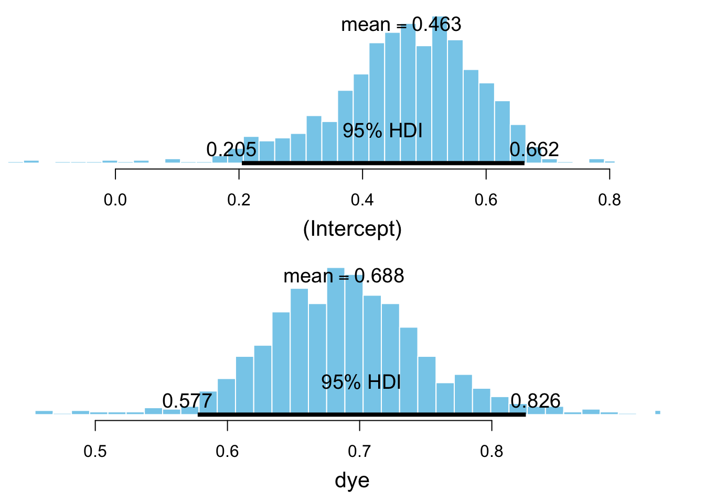
Bootstrappimine on väga hea meetod, mis sõltub väiksemast arvust eeldustest kui statistikas tavaks. Bootstrap ei eelda, et andmed on normaaljaotusega või mõne muu matemaatiliselt lihtsa jaotusega. Tema põhiline eeldus on, et valim peegeldab populatsiooni — mis ei pruugi kehtida väikeste valimite korral ja kallutatud (mitte-juhuslike) valimite korral.
Bootstrappimisel on üks konseptuaalne puudus, mis on eriti tõsine väikeste valimite korral. Võtame oma näite USA presidentidest. Meie valimi liikmed on kõik presideerinud viimase 50 aasta jooksul, aga selle aja jooksul on inimeste keskmine pikkus jõudsalt kasvanud. Kui me tahame ennustada järgmise 50 aasta keskmist presidentide pikkust, peaksime selle faktiga arvestama. Aga bootstrap ei jäta meile sellist võimalust. Vähemalt mitte lihtsat.
Siin tuleb appi Bayesi statistika oma täies hiilguses. Selles paradigmas ei arvesta me mitte ainult andmetega vaid ka taustateadmistega, sünteesides need kokku üheks posterioorseks jaotuseks ehk järeljaotuseks. Selle jaotuse arvutamine erineb bootstrapist, kuid tema tõlgendus ja praktiline töö sellega on samasugune. Erinevalt bootstrapist on Bayes parameetriline meetod, mis sõltub andmete modelleerimisest modeleerija poolt ette antud jaotustesse (normaaljaotus, t jaotus jne). Tegelikult peame me Bayesi arvutuseks modelleerima vähemalt kaks erinevat jaotust: andmete jaotus, mida me kutsume likelihoodiks ehk tõepäraks, ning eelneva teadmise mudel ehk prior, mida samuti modeleeritakse tõenäosusjaotusena.
11.1 3.2. Bayesi põhimõte
Bayesi arvutuseks on meil vaja teada
milline on “parameter space” ehk parameetriruum? Parameetriruum koosneb kõikidest loogiliselt võimalikest parameetriväärtustest. Näiteks kui me viskame ühe korra münti, koosneb parameetriruum kahest elemendist: 0 ja 1, ehk null kulli ja üks kull. See ammendab võimalike sündmuste nimekirja. Kui me aga hindame mõnd pidevat suurust (keskmine pikkus, tõenäosus 0 ja 1 vahel jms), koosneb parameetriruum lõpmata paljudest elementidest (arvudest).
milline on “likelihood function” ehk tõepärafunktsioon? Me omistame igale parameetriruumi elemendile (igale võimalikule parameetri väärtusele) tõepära. Tõepära parameetri väärtusel x on defineeritud kui tõenäosus, millega me võiksime kohata oma andmeid, juhul kui x oleks päriselt õige parameetri väärtus. Teisisõnu, tõepära on kooskõla määr andmete ja parameetri väärtuse x vahel. Tõepära = Pr(andmed I parameetri väärtus). Näiteks, kui tõenäolised on meie andmed, kui USA keskmine president on juhtumisi 183.83629 cm pikkune? Sageli on tõepära modelleeritud pideva tõenäosusfunktsioonina (näiteks normaaljaotusena), mis täielikult katab pideva väärtusruumi. Tõepärafunktsioon ei summeeru 100-le protsendile — see on normaliseerimata.
milline on “prior function” ehk prior? Kui tõepära on modelleeritud pideva funktsioonina siis on ka prior modelleeritud pideva tõenäosusjaotusena (aga ta ei pea olema samas jaotusmudelis, kus tõepära). Erinevus seisneb selles, et kui tõepärafunktsioon annab meie andmete tõenäosuse igal parameetriväärtusel, siis prior annab iga parameetriväärtuse tõenäosuse olukorras, kus me üldse ei arvesta oma andmete olemasoluga. Me omistame igale parameetriruumi väärtusele eelneva tõenäosuse, et see väärtus on üks ja ainus tõene väärtus. Prior jaotus summeerub 1-le. Prior kajastab meie konkreetsetest andmetest sõltumatut arvamust, kui suure tõenäosusega on just see parameetri väärtus tõene; seega seda, mida me usume enne oma andmete nägemist. Nendel parameetri väärtustel, kus prior (või tõepära) = 0%, on ka posteerior garanteeritult 0%. See tähendab, et kui te olete 100% kindel, et mingi sündmus on võimatu, siis ei suuda ka mäekõrgune hunnik uusi andmeid teie uskumust muuta (eelduselt, et te olete ratsionaalne inimene).
http://optics.eee.nottingham.ac.uk/match/uncertainty.php aitab praktikas priorit modelleerida (proovige Roulette meetodit).
Kui te eelnevast päriselt aru ei saanud, ärge muretsege. Varsti tulevad puust ja punaseks näited likelihoodi ja priori kohta.
Edasi on lihtne. Arvuti võtab tõepärafunktsiooni ja priori, korrutab need üksteisega läbi ning seejärel normaliseerib saadud jaotuse nii, et jaotusealune pindala võrdub ühega. Saadud tõenäosusjaotus ongi posteeriorne jaotus ehk posteerior ehk järeljaotus. Kogu lugu.
Me teame juba palju aastakümneid, et Bayesi teoreem on sellisele ülesandele parim võimalik lahendus. Lihtsamad ülesanded lahendame me selle abil täiuslikult. Kuna parameetrite arvu kasvuga mudelis muutub Bayesi teoreemi läbiarvutamine eksponentsiaalselt arvutusmahukamaks (sest läbi tuleb arvutada kõikide parameetrite väärtuste kõikvõimalikud kombinatsioonid), oleme sunnitud vähegi keerulisemad ülesanded lahendama umbkaudu, asendades Bayesi teoreemi ad hoc MCMC algoritmidega, mis teie arvutis peituva propelleri Karlsoni kombel lendu saadavad selleks, et “otse” sämplida arve posterioorsest jaotusest. Meie kasutatava MCMC Hamiltonian Monte Carlo mootori nimi on Stan. See on R-st eraldiseisev programm, millel on aga R-i interface R-i pakettide rstan(), rethinking(), rstanarm() jt kaudu. Meie töötame ka edaspidi puhtalt R-s, mis automaatselt suunab meie mudelid ja muud andmed Stani, kus need läbi arvutatakse ja seejärel tulemused R-i tagasi saadetakse. Tulemuste töötlus ja graafiline esitus toimub meie poolt jällegi R-is. Seega ei pea me ise kordagi Stani avama. (Stanil on sarnased interfaced ka Pythoni, Matlabi jt keeltega.)
Alustame siiski lihtsa näitega, mida saab käsitsi läbi arvutada.
11.1.1 1. näide
Me teame, et suremus haigusesse on 50% ja meil on palatis 3 patsienti, kes seda haigust põevad. Seega on meil kaks andmetükki (50% ja n=3). Küsimus: mitu meie patsienti oodatavalt hinge heidavad? Eeldusel, et meie patsiendid on iseseisvad (näiteks ei ole sugulased), on meil tüüpiline mündiviske olukord.
Parameetriruum: 0 elus, 1 elus, 2 elus ja 3 elus. Seega on meil neljaliikmeline parameetriruumi.
Edasi loeme üles kõik võimalikud sündmusteahelad, mis saavad loogiliselt juhtuda (et saada tõepärafunktsioon).
Me heidame münti 3 korda: H - kiri, T - kull
Võimalikud sündmused on:
HHH, HTH, THH, HHT, HTT, TTH, THT, TTT,
Kui Pr(H) = 0.5 ning H = elus ja T = surnud, siis lugedes kokku kõik võimalikud sündmused:
- 0 elus - 1,
- 1 elus - 3,
- 2 elus - 3,
- 3 elus - 1
Nüüd teame parameetriruumi igale liikme kohta, kui suure tõenäosusega me ootame selle realiseerumist. Näiteks, Pr(0 elus) = 1/8, Pr(1 elus) = 3/8, Pr(1 või 2 elus) = 6/8 jne
Selle teadmise saab konverteerida tõepärafunktsiooniks
x<-seq(from= 0, to=3) #parameter space as a grid
y<-c(1,3,3,1) #likelihood -
plot(x,y, ylab="number of possibilities", xlab="number of deaths", type="b", main="likelihood")
Siit näeme, et üks surm ja kaks surma on sama tõenäolised ja üks surm on kolm korda tõenäolisem kui null surma (või kolm surma).
Tõepära annab meile tõenäosuse Pr(mortality=0.5 & N=3) igale loogiliselt võimalikule surmade arvule (0 kuni 3).
Me saame sama tulemuse kasutades binoomjaotuse mudelit (sest mitteformaalselt kasutasime ka ennist sama mudelit).
x<-seq(0, 3)
y <- dbinom(x,3, 0.5)
plot(x, y, type="b", xlab="nr of deaths", ylab="probability of x deaths", main="probability of x deaths out of 3 patients if Pr(Heads)=0.5")
Nüüd proovime seda koodi olukorras, kus meil on 9 patsienti ja suremus on 0.67
x<-seq(0, 9)
y <- dbinom(x,9, 0.67)
plot(x, y, type="b", xlab="nr of deaths", ylab="probability of x deaths", main="probability of x out of 9 deaths if Pr(Heads)=0.67")
Lisame siia tasase priori (lihtsuse huvides) ja arvutame posterioorse jaotuse kasutades Bayesi teoreemi. Igale parameetri väärtusele, tõepära * prior on proportsionaalne posterioorse tõenäosusega, et just see parameetri väärtus on see ainus tõene väärtus. Posterioorsed tõenäosused normaliseeritakse nii, et nad summeeruksid 1-le.
Me defineerime X telje kui rea 10-st arvust (0 kuni 9 surma) ja arvutame tõepära igale neist 10-st arvust. Sellega ammendame me kõik loogiliselt võimalikud parameetri väärtused.
# define grid
p_grid <- seq( from=0 , to=9 )
# define flat prior
prior <- rep( 1 , 10 )
# compute likelihood at each value in grid
likelihood <- dbinom( p_grid , size=9 , prob=0.67 )
# compute product of likelihood and prior
unstd.posterior <- likelihood * prior
# normalize the posterior, so that it sums to 1
posterior <- unstd.posterior/sum(unstd.posterior)
# sum(posterior) == 1
plot( x = p_grid , y = posterior , type="b" ,
xlab="nr of deaths" , ylab="posterior probability", main="posterior distribution" )
See on parim võimalik teadmine, mitu kirstu tasuks tellida, arvestades meie priori ja likelihoodi mudelitega. Näiteks, sedapalju, kui surmad ei ole üksteisest sõltumatud, on meie tõepäramudel (binoomjaotus) vale.
11.1.2 2. näide: sõnastame oma probleemi ümber
Mis siis, kui me ei tea suremust ja tahaksime seda välja arvutada? Kõik, mida me teame on, et 6 patsienti 9st surid. Nüüd koosnevad andmed 9 patsiendi morbiidsusinfost (parameeter, mille väärtust me eelmises näites arvutasime) ja parameeter, mille väärtust me ei tea, on surmade üldine sagedus (see parameeter oli eelmises näites fikseeritud, ja seega kuulus andmete hulka).
Seega on meil 1) parameetriruum 0% kuni 100% suremus (0st 1-ni), mis sisaldab lõpmata palju numbreid.
kaks võimalikku sündmust (surnud, elus), seega binoomjaotusega modelleeritud tõepärafunktsioon. Nagu me juba teame, on r funkrsioonis dbinom() kolm argumenti: surmade arv, patsientide koguarv ja surmade tõenäosus. Seekord oleme me fikseerinud esimesed kaks ja soovime arvutada kolmanda.
tasane prior, mis ulatub 0 ja 1 vahel. Me valisime selle priori selleks, et mitte muuta tõepärafunktsiooni kuju. See ei tähenda, et me arvaksime, et tasane prior on mitteinformatiivne. Tasane prior tähendab, et me usume, et suremuse kõik väärtused 0 ja 1 vahel on võrdselt tõenäolised. See on vägagi informatsioonirohke (ebatavaline) viis maailma näha ükskõik mis haiguse puhul!
Tõepära parameetri väärtusel x on tõenäosus kohata meie andmeid, kui x on juhtumisi parameetri tegelik väärtus. Meie näites koosneb tõepärafunktsioon tõenäosustest, et kuus üheksast patsiendist surid igal võimalikul suremuse väärtusel (0…1). Kuna see on lõpmatu rida, teeme natuke sohki ja arvutame tõepära 20-l valitud suremuse väärtusel
Tehniliselt on sinu andmete tõepärafunktsioon agregeeritud iga üksiku andmepunkti tõepärafunktsioonist.
Seega vaatab Bayes igat andmepunkti eraldi (andmete sisestamise järjekord ei loe).# define grid (mortality at 20 evenly spaced probabilities from 0 to 1)
p_grid <- seq( from=0 , to=1 , length.out=20 )
# define prior
prior <- rep( 1 , 20 )
# compute likelihood at each value in grid
likelihood <- dbinom( 6 , size=9 , prob=p_grid )
# compute product of likelihood and prior
plot(p_grid, prior, type="b", main="prior")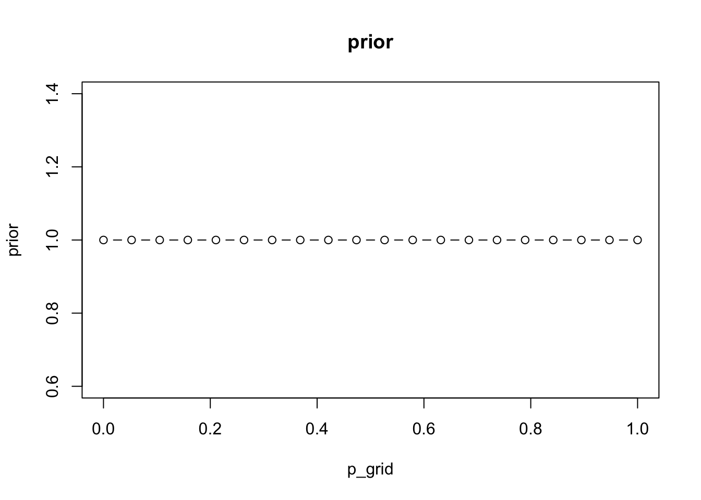
p_grid <- seq( from=0 , to=1 , length.out=20 )
likelihood <- dbinom( 6 , size=9 , prob=p_grid )
plot(p_grid, likelihood, type="b", main="the likelihood function")
unstd.posterior <- likelihood * prior
# standardize the posterior, so that it sums to 1
posterior <- unstd.posterior / sum(unstd.posterior)
plot( x = p_grid , y = posterior , type="b" ,
xlab="mortality" , ylab="posterior probability", main="posterior distribution" )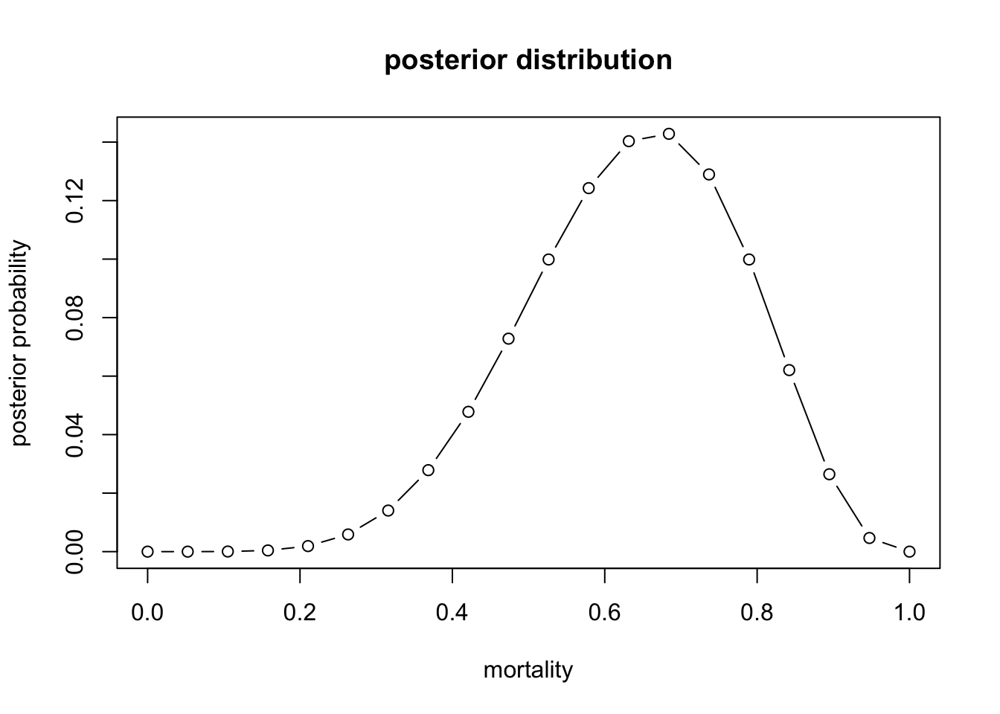
Nüüd on meil posterioorne tõenäosusfunktsioon, mis summeerub 1-le ja mis sisaldab kogu meie teadmist suremuse kohta.
11.1.2.1 Kui n=1
Bayes on lahe sest tema hinnangud väiksele N-le on loogiliselt sama pädevad kui suurele N-le. See ei ole nii klassikalises sageduslikus statistikas, kus paljud testid on välja töötatud N = Inf eeldusel ja töötavad halvasti väikeste valimitega.
Hea küll, me arvutame jälle suremust.
Bayes töötab andmepunkti kaupa (see et me talle ennist kõik andmed korraga ette andsime, on puhtalt meie mugavus)
# define grid
p_grid <- seq( from=0 , to=1 , length.out=20 )
# define prior
prior <- rep( 1 , 20 )
# compute likelihood at each value in grid
likelihood <- dbinom( 1 , size=1 , prob=p_grid )
# compute product of likelihood and prior
unstd.posterior <- likelihood * prior
# standardize the posterior, so that it sums to 1
posterior <- unstd.posterior / sum(unstd.posterior)
plot( x = p_grid , y = posterior , type="b" ,
xlab="mortality" , ylab="posterior probability" )
esimene patsient suri - 0 mortaalsus ei ole enam loogiliselt võimalik (välja arvatud siis kui prior selle koha peal = 0) ja mortaalsus 100% on andmetega (tegelikult andmega) parimini kooskõlas. Posteerior on nulli ja 100% vahel sirge sest vähene sissepandud informatsioon lihtsalt ei võimalda enamat.
# define grid
p_grid <- seq( from=0 , to=1 , length.out=20 )
# define prior
prior <- posterior
# compute likelihood at each value in grid
likelihood <- dbinom( 1 , size=1 , prob=p_grid )
# compute product of likelihood and prior
unstd.posterior <- likelihood * prior
# standardize the posterior, so that it sums to 1
posterior1 <- unstd.posterior / sum(unstd.posterior)
plot( x = p_grid , y = posterior1 , type="b" ,
xlab="mortality" , ylab="posterior probability" )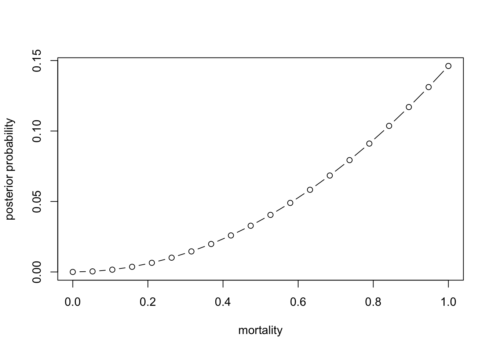
Teine patsient suri. Nüüd ei ole 0 ja 1 vahel enam sirge posteerior. Posteerior on kaldu 100 protsendi poole, mis on ikka kõige tõenäolisem väärtus.
# define grid
p_grid <- seq( from=0 , to=1 , length.out=20 )
# define prior
prior <- posterior1
# compute likelihood at each value in grid
likelihood <- dbinom( 0 , size=1 , prob=p_grid )
# compute product of likelihood and prior
unstd.posterior <- likelihood * prior
# standardize the posterior, so that it sums to 1
posterior2 <- unstd.posterior / sum(unstd.posterior)
plot( x = p_grid , y = posterior2 , type="b" ,
xlab="mortality" , ylab="posterior probability" )
Kolmas patsient jäi ellu - 0 ja 100% mortaalsus on seega võimaluste nimekirjast maas ning suremus on ikka kaldu valimi keskmise poole (75%).
Teeme sedasama prioriga, mis ei ole tasane. See illustreerib tõsiasja, et kui N on väike siis domineerib prior posteerior jaotust. (Suure N korral on vastupidi, priori kuju on sageli vähetähtis.)
# define grid
p_grid <- seq( from=0 , to=1 , length.out=20 )
# define prior
prior <- c( seq(1:10), seq(from= 10, to= 1) )
# compute likelihood at each value in grid
likelihood <- dbinom( 1 , size=1 , prob=p_grid )
# compute product of likelihood and prior
unstd.posterior <- likelihood * prior
# standardize the posterior, so that it sums to 1
posterior <- unstd.posterior / sum(unstd.posterior)
plot(x=1:20, y=prior, type="b", main="prior")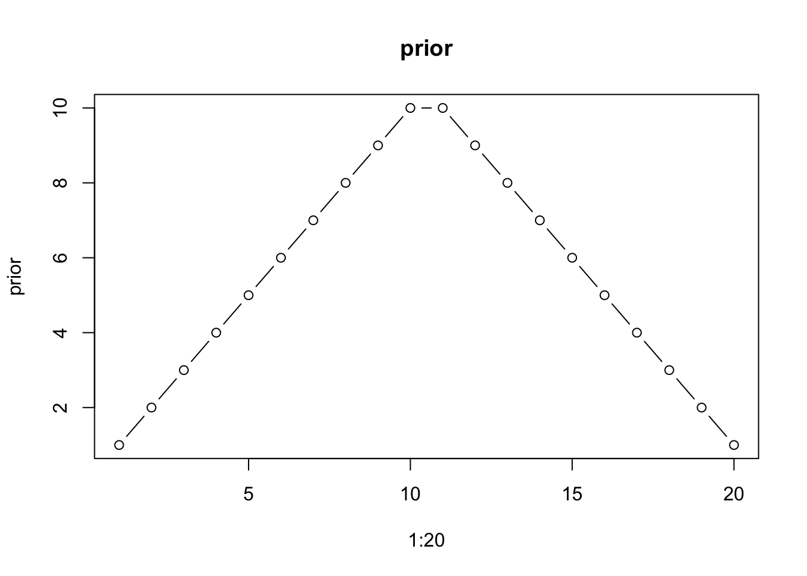
plot( x = p_grid , y = posterior , type="b" ,
xlab="mortality" , ylab="posterior probability", main="posterior") 1. patsient suri
1. patsient suri
# define grid
p_grid <- seq( from=0 , to=1 , length.out=20 )
# define prior
prior <- posterior
# compute likelihood at each value in grid
likelihood <- dbinom( 1 , size=1 , prob=p_grid )
# compute product of likelihood and prior
unstd.posterior <- likelihood * prior
# standardize the posterior, so it sums to 1
posterior1 <- unstd.posterior / sum(unstd.posterior)
plot(x=1:20, y=prior, type="b", main="prior")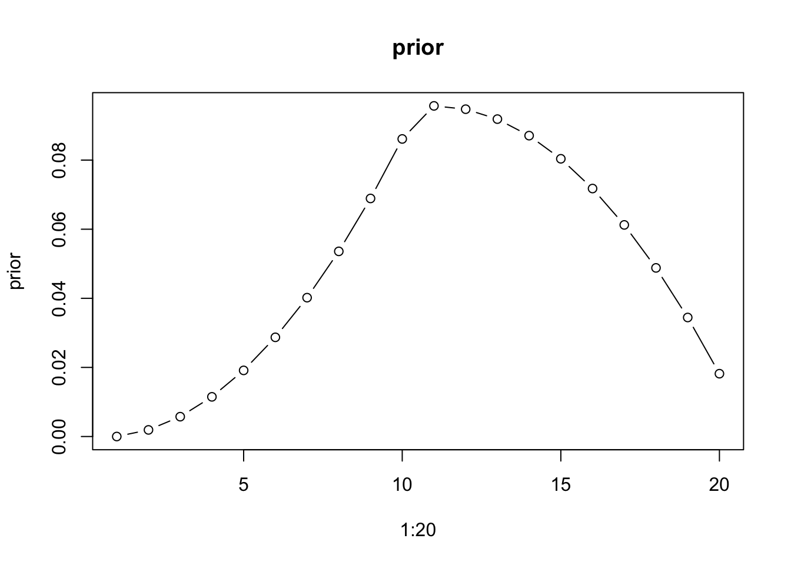
plot( p_grid , posterior1 , type="b" ,
xlab="mortality" , ylab="posterior probability", main="posterior" )
Teine patsient suri
# define grid
p_grid <- seq( from=0 , to=1 , length.out=20 )
# define prior
prior <- posterior1
# compute likelihood at each value in grid
likelihood <- dbinom( 0 , size=1 , prob=p_grid )
# compute product of likelihood and prior
unstd.posterior <- likelihood * prior
# standardize the posterior, so that it sums to 1
posterior2 <- unstd.posterior / sum(unstd.posterior)
plot(x=1:20, y=prior, type="b", main="prior")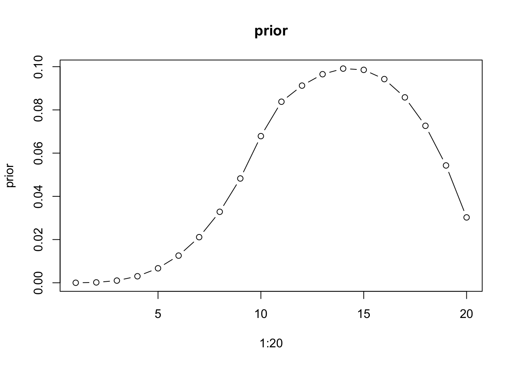
plot( x = p_grid , y = posterior2 , type="b" ,
xlab="mortality" , ylab="posterior probability", main="posterior" ) 3. patsient jäi ellu. Nüüd on posteeriori tipp mitte 75% juures nagu ennist, vaid kuskil 50% juures — tänu priorile.
3. patsient jäi ellu. Nüüd on posteeriori tipp mitte 75% juures nagu ennist, vaid kuskil 50% juures — tänu priorile.
11.2 2.3. Mudelite keel
Siin vaatame kuidas kirjeldada mudelit nii, et masin selle ära tunneb. Meie mudelid töötavad läbi rethinking() paketi. See raamatukogu pakub kaks võimalust, kuidas mudelit arvutada, mis mõlemad kasutavad sama notatsiooni. Mõlemad võimalused arvutavad posteeriori mitte Bayesi teoreemi kasutades (nagu me ennist tegime), vaid kasutades stohhastilisi meetodeid, mis iseloomustavad posteeriori umbkaudu (aga piisavalt täpselt). Põhjuseks on, et keerulisemate mudelite korral on Bayesi teoreemi kasutamine liialt arvutusmahukas.
Esiteks rethinking::map() leiab posteeriori tipu ja selle lähedal funktsiooni tõusunurga. Siin on eelduseks, et posteerior on normaaljaotus. See eeldus kehtib alati, kui nii prior kui tõepära on modelleeritud normaaljaotusena (ja ka paljudel muudel juhtudel).
Teine võimalus on rethinking::map2stan(), mis suunab teie kirjutatud mudeli Stan-i. Stan teeb Hamilonian Monte Carlo simulatsiooni, kasutades valget maagiat selleks, et tõmmata valim otse posteerioorsest jaotusest. See on väga moodne lähenemine statistikale, töötab oluliselt aeglasemalt kui map, aga ei sõltu normaaljaotustest ning suudab arvutada hierarhilisi mudeleid, mis map-le üle jõu käivad.
Me võime sama mudeli kirjelduse sõõta mõlemasse funktsiooni.
Lihtne mudel näeb välja niimodi:
dead ~ dbinom(9, p) , # binomial likelihood
p ~ dunif(0, 1) # uniform prior
Tõepärafunktsioon on modeleeritud binoomjaotusena. Parameeter, mille väärtust määratakse on p, ehk suremus. See on ainus parameeter, mille väärtust me siin krutime. NB! igale parameetrile peab vastama oma prior. Meil on selles mudelis täpselt 1 parameeter ja 1 prior. Vastuseks saame selle ainsa parameetri posterioorse jaotuse. Hiljem näeme, et kui meil on näiteks 452 parameetrit, mille väärtusi me koos arvutame, siis on meil ka 452 priorit ja 452 posterioorset jaotust.
library(rethinking)
m1 <- map(
alist(
dead ~ dbinom(9, p) , # binomial likelihood
p ~ dunif(0, 1) # uniform prior
), data=list(dead=6) )
precis( m1 ) # summary of quadratic approximation## Mean StdDev 5.5% 94.5%
## p 0.67 0.16 0.42 0.92Nüüd tõmbame posteerioroorsest jaotusest valimi n=10 000. Selleks on funktsioon extract.samples()
samples<-extract.samples(m1)
#hist(samples$p)
dens(samples$p)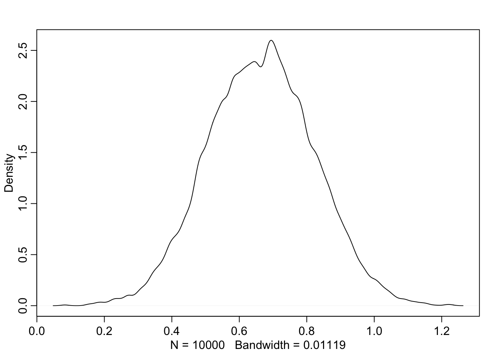
#PI(samples$p, prob = 0.95) #leaves out equal 2.5% at both sides
HPDI(samples$p, prob = 0.95) #highest density 95% at the center## |0.95 0.95|
## 0.3592174 0.9678783Kuus patsienti üheksast surid ja nüüd me usume, et tegelik suremus võib olla nii madal kui 37% ja nii kõrge kui 97%. Kui me tahame paremat hinnangut on meil vaja kas rohkem patsiente või informatiivsemat priorit (paremat taustainfot).
library(rethinking)
m2 <- map(
alist(
dead ~ dbinom(90,p) , # binomial likelihood
p ~ dunif(0,1) # uniform prior
), data=list(dead=60) )
# display summary of quadratic approximation
precis( m2 )## Mean StdDev 5.5% 94.5%
## p 0.67 0.05 0.59 0.75samples<-extract.samples(m2)
dens(samples$p)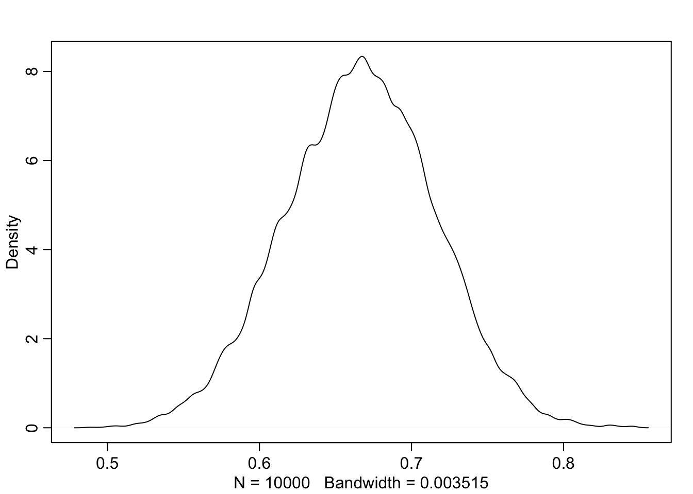
#PI(samples$p, prob = 0.95) #leaves out equal 2.5% at both sides
HPDI(samples$p, prob = 0.95) #highest density 95% at the center## |0.95 0.95|
## 0.5687602 0.761158710 korda rohkem andmeid: nüüd on suremus määratud kuskile 57% ja 77% vahele (suure tõenäosusega)
11.2.1 beta prior
Nüüd anname sisse mõistlikuma struktuuriga priori: beta-jaotuse
Beta-prior katab vahemiku 0st 1ni ja sellel on 2 parameetrit, a ja b.
Siin mõned näited erinevatest beta parametriseeringutest
x <- seq(0, 1, length = 1000)
plot(x, dbeta(x, 0.2, 0.2))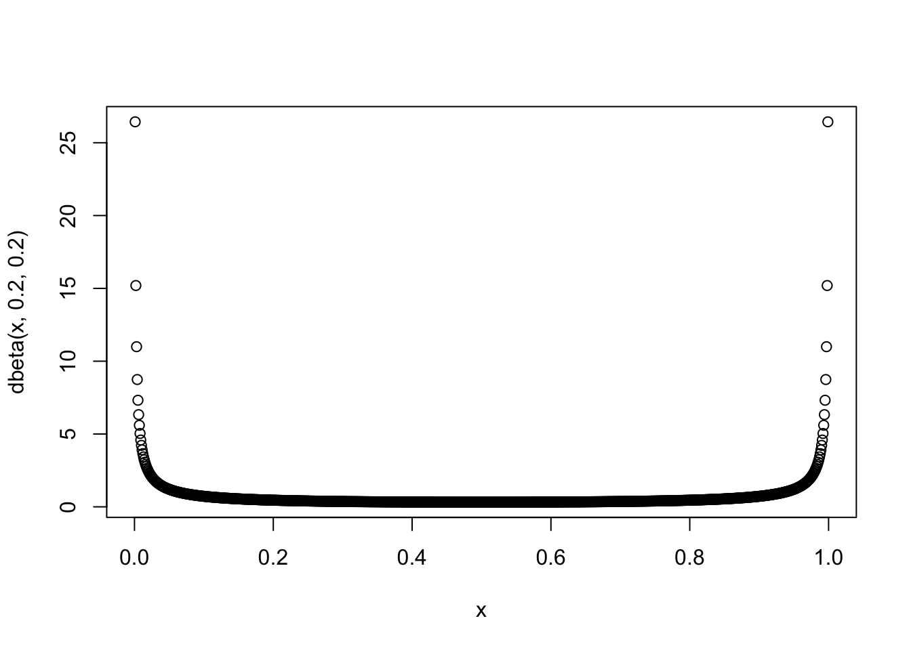
plot(x, dbeta(x, 1, 0.2))
plot(x, dbeta(x, 1, 1))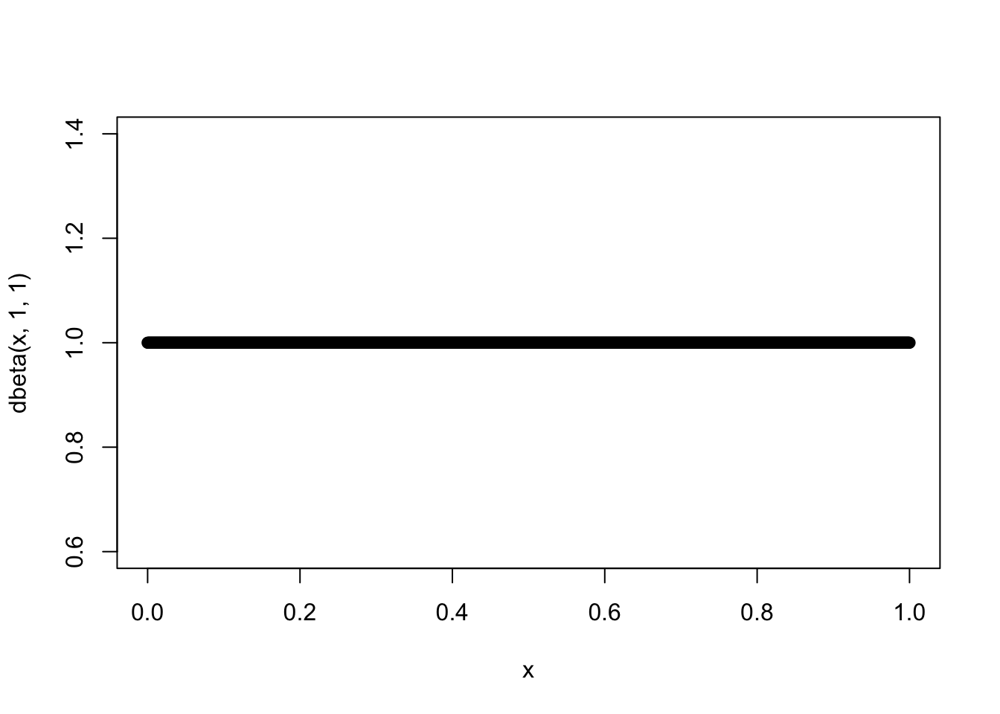
plot(x, dbeta(x, 2, 1))
plot(x, dbeta(x, 4, 1))
plot(x, dbeta(x, 2, 2))
plot(x, dbeta(x, 4, 4))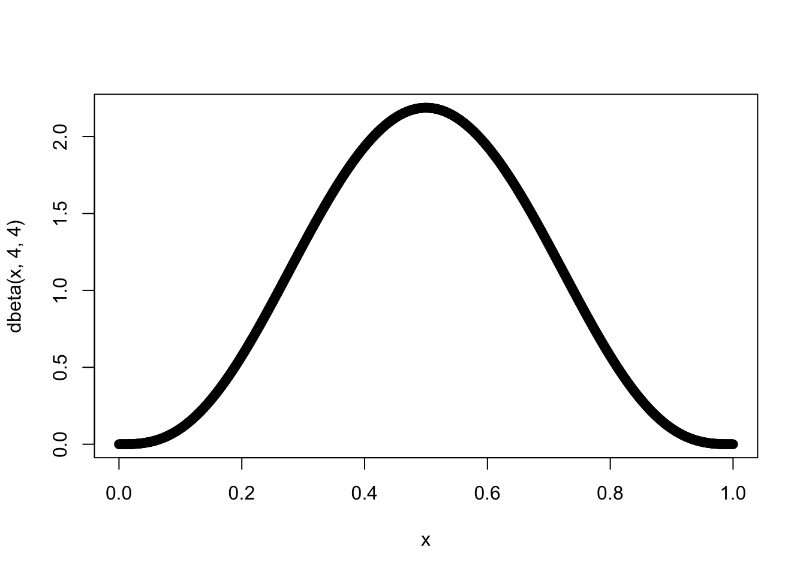
plot(x, dbeta(x, 200, 100))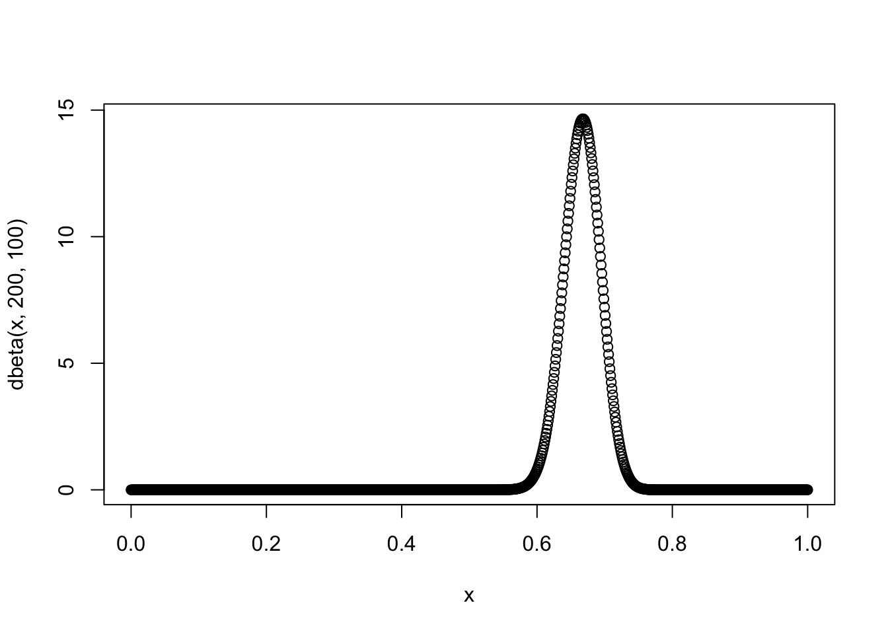
beta(θ | a, b) jaotuse keskväärtus on
μ = a/(a + b)
ja mood on
ω = (a − 1)/(a + b − 2) (juhul kui a > 1 ja b > 1).
Seega, kui a=b, siis on keskmine ja mood 0.5. Kui a > b, on keskmine ja mood > 0.5 ja kuid a < b, on mõlemad < 0.5.
Beta jaotuse “laiuse” annab “konsentratsioon” κ = a + b. Mida suurem κ, seda kitsam jaotus.
a = μκ
b = (1 − μ)κ
a = ω(κ − 2) + 1
b = (1 − ω)(κ − 2) + 1 for κ > 2
Me võime κ-le omistada väärtuse nagu see oleks mündivisete arv, mis iseloomustab meie priori tugevust (juhul kui tõepära funktsioon tuleb andmetest, mis koosnevad selle sama mündi visetest). Kui meie jaoks piisaks ainult mõnest mündiviset, et priorist (eelnevast teadmisest) lahti ütelda, peaks meie prior sisaldama väikest kappat.
Näiteks, mu prior on, et münt on aus (μ = 0.5; a = b), aga ma ei ole selles väga kindel.
Niisiis ma arvan, et selle eelteadmise kaal võrdub sellega, kui ma oleksin näinud 8 mündiviske tulemust.
Seega κ = 8, mis tähendab, et a = μκ = 4 and b = (1 − μ)κ = 4.
Aga mis siis kui me tahame beta priorit, mille mood ω = 0.8 ja κ = 12?
Siis saame valemist, et a = 9 ja b = 3. library(rethinking)
m3 <- map(
alist(
dead ~ dbinom(9,p) , # binomial likelihood
p ~ dbeta(200,100) # beta prior
), data=list(dead=6) )
# display summary of quadratic approximation
precis( m3 )## Mean StdDev 5.5% 94.5%
## p 0.67 0.03 0.62 0.71samples<-extract.samples(m3)
dens(samples$p)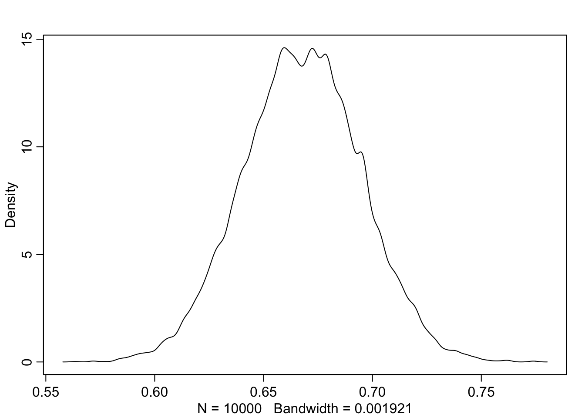
HPDI(samples$p, prob = 0.95) #highest density 95% at the center## |0.95 0.95|
## 0.6161019 0.7209454Nagu näha on ka kitsa priori mõju üsna väika, isegi kui kui n=9.
11.2.1.1 Lõpetuseks veel prioritest üldiselt.
Neid võib jagada kolmeks: mitteinformatiivsed, väheinformatiivsed ehk “regularizing” ja informatiivsed. Mitteinformatiivseid prioreid ei ole sisuliselt olemas ja neid on soovitav vältida. Väheinformatiivsed priorid kujutavad endast kompromissi: nad muudavad võimalikult vähe tõepärafunktsiooni kuju, aga samas piiravad seda osa parameetriruumist, kust MCMC ahelad posteeriori otsivad (mis on arvutuslikult soodne). Nende taga on filosoofiline eeldus, et teadlast huvitavad eelkõige tema enda andmed ja see, mida need ühe või teise hüpoteesi (parameetri väärtuse) kohta ütlevad. See eeldus on vaieldav aga kui selle järgi käia, siis kulub vähem mõttejõudu eelteadmiste mudelisse formaliseerimiseks. Vähemalt suured farmaatsiafirmad seda hoiakut ei jaga ja kulutavad usinalt oma miljoneid korralike informatiivsete priorite tootmiseks. Selles protsessis saavad kokku statistikud, teaduseksperdid ja psühholoogid, et inimkonna teadmisi võimalikult adekvaatselt vormida tõenäosusjaotustesse. Meie töötame siin siiski enamasti väheinformatiivsete prioritega, mis on hetkel moes. Aga teile oma teaduses soovitan siiralt arendada informatiivseid prioreid. Vähemalt nõnda toimides te mõtlete oma teaduse üle põhjalikult järele.
Bååth, Rasmus. 2013. “Bayesian First Aid.” Tba. tba.
———. 2016. Bayesboot: An Implementation of Rubin’s (1981) Bayesian Bootstrap. https://CRAN.R-project.org/package=bayesboot.
Bürkner, Paul-Christian. 2017. “brms: An R Package for Bayesian Multilevel Models Using Stan.” Journal of Statistical Software 80 (1): 1–28. doi:10.18637/jss.v080.i01.
Gabry, Jonah, and Tristan Mahr. 2017. Bayesplot: Plotting for Bayesian Models. http://mc-stan.org/bayesplot.
Gelman, Andrew, John B Carlin, Hal S Stern, David B Dunson, Aki Vehtari, and Donald B Rubin. 2014. Bayesian Data Analysis. Vol. 2. CRC press Boca Raton, FL.
Kruschke, John. 2014. Doing Bayesian Data Analysis: A Tutorial with R, Jags, and Stan. Academic Press.
Marwick, Ben, Carl Boettiger, and Lincoln Mullen. 2017. “Packaging Data Analytical Work Reproducibly Using R (and Friends).” PeerJ Preprints 5: e3192v1. doi:10.7287/peerj.preprints.3192v1.
McElreath, Richard. 2015. Statistical Rethinking: A Bayesian Course with Examples in R and Stan. CRC Press.
———. 2016. Rethinking: Statistical Rethinking Book Package.
Stan Development Team. 2016. Rstanarm: Bayesian Applied Regression Modeling via Stan. http://mc-stan.org/.
Wickham, Hadley, Peter Danenberg, and Manuel Eugster. 2017. Roxygen2: In-Line Documentation for R. https://CRAN.R-project.org/package=roxygen2.